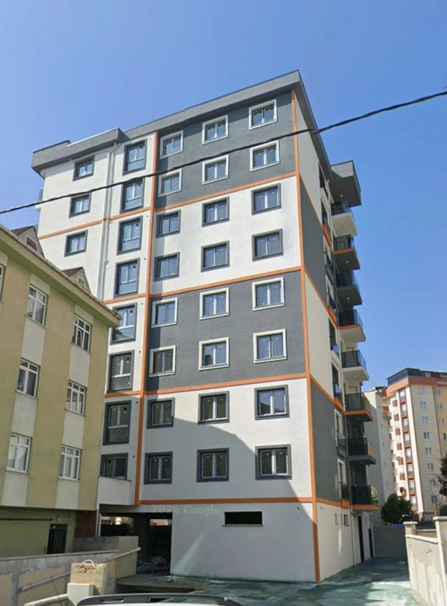
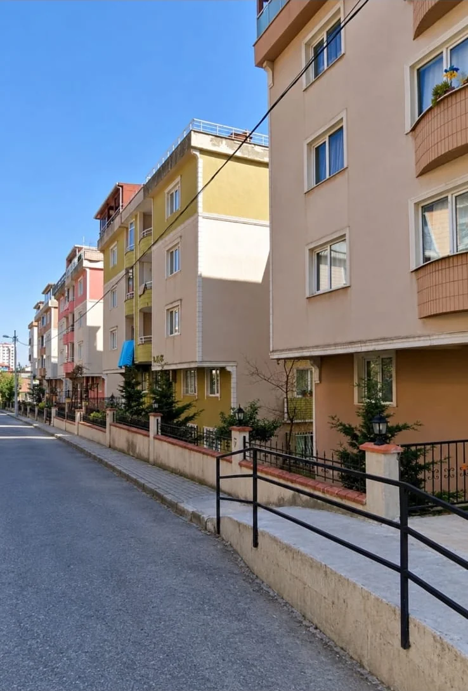
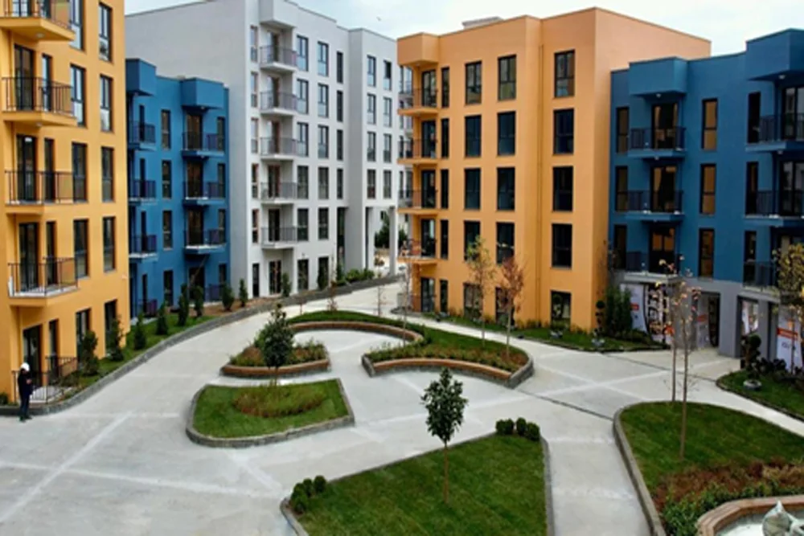
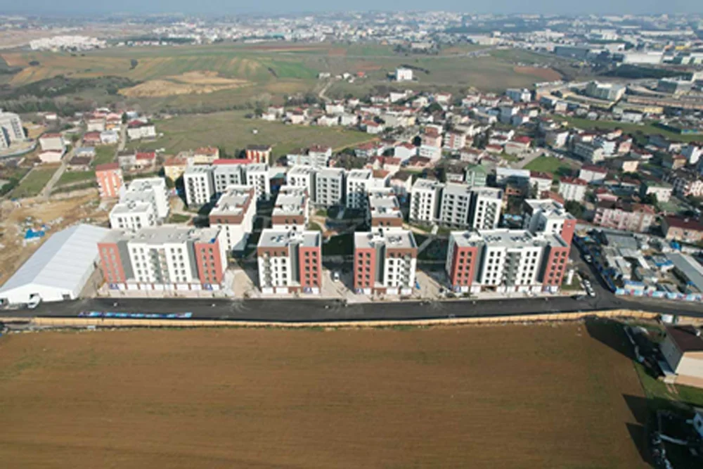
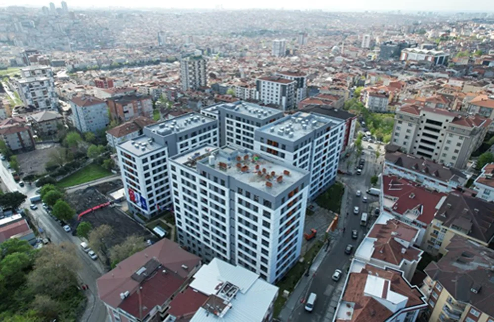
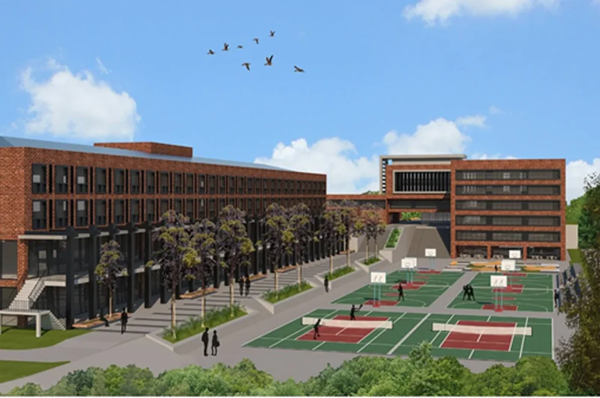

Büyük ölçekli sitelerden butik rezidanslara, iş merkezlerinden plaza dış cephelerine kadar geniş hizmet ağımız.








Mevcut yönetiminizi şeffaf ve profesyonel ellere devredin veya periyodik temizlik ihtiyaçlarınız için 60 saniyede fiyat teklifi oluşturun.